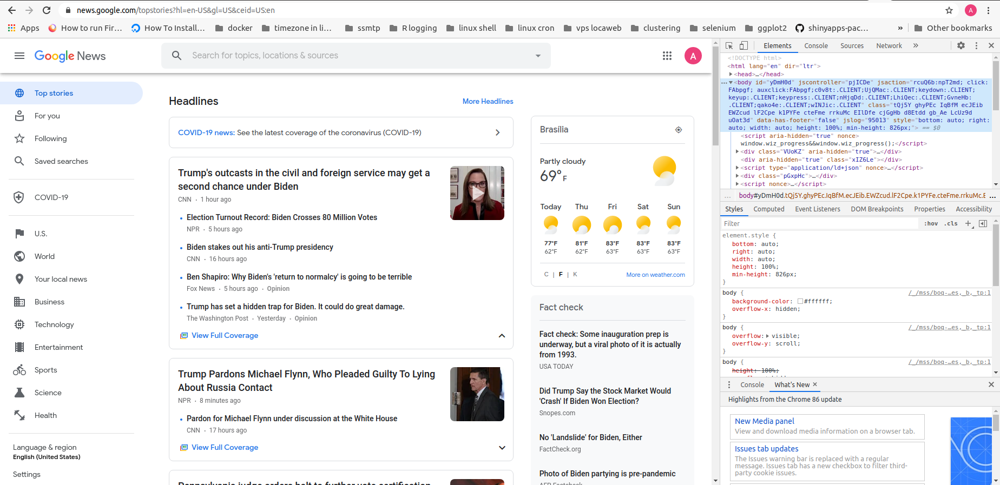
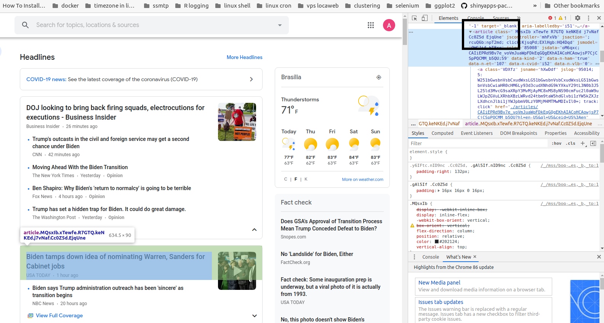

Scraping Google News with rvest (2020’s update)
Updated on 2020-12-05. This is an enhanced and substantially different version of the original article published in R-Bloggers in 2018.
This is an example of how to scrape Google News website with the rvest package.
First off, you should take a look at the Google News website HERE, which I reproduce below:

You may notice, on the right side of the page, that we are using Google Chrome dev-tools. This is necessary in order to identify the html nodes we need. You can access this tool by hitting the F12 key. The html nodes are passed as arguments to the rvest functions.
Basically, the idea is to extract the communication vehicle (vehicle), the time elapsed since the news was published (time), and the main headline (headline).
The code and comments are presented below:
# loading the packages:
library(dplyr) # for pipes and the data_frame function
library(rvest) # webscraping
library(stringr) # to deal with strings and to clean up our data# extracting the whole website
google <- read_html("https://news.google.com/")As we can see, the Google News website is divided in rectangular chunks of headlines and other info. Therefore, our strategy is to first scrape the whole chunks, and then, for each chunk scrape the information of interest: vehicle, time, and headlines.
We start scraping the whole chunks of articles. By using the “inspect” tool of our browser, we can see that the “article” node is the one that identifies each chunk.

# extracting the headlines
# and using stringr for cleaning
article_all <- google %>% html_nodes("article")
article_all## {xml_nodeset (47)}
## [1] <article class=" MQsxIb xTewfe R7GTQ keNKEd j7vNaf Cc0Z5d EjqUne" jscont ...
## [2] <article class=" MQsxIb xTewfe tXImLc R7GTQ keNKEd keNKEd dIehj EjqUne" ...
## [3] <article class=" MQsxIb xTewfe tXImLc R7GTQ keNKEd keNKEd dIehj EjqUne" ...
## [4] <article class=" MQsxIb xTewfe tXImLc R7GTQ keNKEd keNKEd dIehj EjqUne" ...
## [5] <article class=" MQsxIb xTewfe tXImLc R7GTQ keNKEd keNKEd dIehj EjqUne" ...
## [6] <article class=" MQsxIb xTewfe R7GTQ keNKEd j7vNaf Cc0Z5d EjqUne" jscont ...
## [7] <article class=" MQsxIb xTewfe tXImLc R7GTQ keNKEd keNKEd dIehj EjqUne" ...
## [8] <article class=" MQsxIb xTewfe tXImLc R7GTQ keNKEd keNKEd dIehj EjqUne" ...
## [9] <article class=" MQsxIb xTewfe tXImLc R7GTQ keNKEd keNKEd dIehj EjqUne" ...
## [10] <article class=" MQsxIb xTewfe tXImLc R7GTQ keNKEd keNKEd dIehj EjqUne" ...
## [11] <article class=" MQsxIb xTewfe R7GTQ keNKEd j7vNaf Cc0Z5d EjqUne" jscont ...
## [12] <article class=" MQsxIb xTewfe tXImLc R7GTQ keNKEd keNKEd dIehj EjqUne" ...
## [13] <article class=" MQsxIb xTewfe tXImLc R7GTQ keNKEd keNKEd dIehj EjqUne" ...
## [14] <article class=" MQsxIb xTewfe tXImLc R7GTQ keNKEd keNKEd dIehj EjqUne" ...
## [15] <article class=" MQsxIb xTewfe tXImLc R7GTQ keNKEd keNKEd dIehj EjqUne" ...
## [16] <article class=" MQsxIb xTewfe R7GTQ keNKEd j7vNaf Cc0Z5d EjqUne" jscont ...
## [17] <article class=" MQsxIb xTewfe tXImLc R7GTQ keNKEd keNKEd dIehj EjqUne" ...
## [18] <article class=" MQsxIb xTewfe tXImLc R7GTQ keNKEd keNKEd dIehj EjqUne" ...
## [19] <article class=" MQsxIb xTewfe tXImLc R7GTQ keNKEd keNKEd dIehj EjqUne" ...
## [20] <article class=" MQsxIb xTewfe tXImLc R7GTQ keNKEd keNKEd dIehj EjqUne" ...
## ...Having the whole chunks, now we can separately scrape the information of interest:
times <- article_all %>%
html_node("time") %>%
html_text()
vehicles <- article_all %>%
html_nodes("a.wEwyrc.AVN2gc.uQIVzc.Sksgp") %>%
html_text()
headlines <- article_all %>%
html_nodes("a.DY5T1d") %>%
html_text()Let’s take a look at these vectors:
# take a look at the first ten
headlines[1:10]## [1] "Judge Orders Government to Fully Reinstate DACA Program"
## [2] "Federal judge orders restoration of DACA program"
## [3] "Federal court restores DACA program, orders DHS to accept new applicants"
## [4] "Judge Orders Trump Administration To Restore DACA As It Existed Under Obama"
## [5] "Federal judge reinstates DACA, orders Homeland Security to quickly accept new applicants"
## [6] "Newsom’s stay-home order set to take effect in SoCal this weekend after ICU capacity drops"
## [7] "California's Stay-at-Home Orders: What to Know About Newsom's Measures"
## [8] "California's Stay-at-Home Order Explained As Gov. Newsom Puts Severe Regional Restrictions in Place"
## [9] "Newsom faces backlash for closing playgrounds in new order"
## [10] "Map: California's 5 regions that could fall under stay-at-home order soon"vehicles[1:10]## [1] "The New York Times" "CBS News" "Fox News"
## [4] "NPR" "Yahoo News" "KTLA Los Angeles"
## [7] "The New York Times" "Newsweek" "Los Angeles Times"
## [10] "SF Gate"times[1:10]## [1] "8 hours ago" "9 hours ago" "9 hours ago" "8 hours ago" "10 hours ago"
## [6] "3 hours ago" "20 hours ago" "19 hours ago" "11 hours ago" "11 hours ago"It seems all good!
Then, we can proceed to generate our final tibble:
tb_news <- tibble(headlines, vehicles, times)
tb_news## # A tibble: 47 x 3
## headlines vehicles times
## <chr> <chr> <chr>
## 1 Judge Orders Government to Fully Reinstate DACA Pro… The New York … 8 hours …
## 2 Federal judge orders restoration of DACA program CBS News 9 hours …
## 3 Federal court restores DACA program, orders DHS to … Fox News 9 hours …
## 4 Judge Orders Trump Administration To Restore DACA A… NPR 8 hours …
## 5 Federal judge reinstates DACA, orders Homeland Secu… Yahoo News 10 hours…
## 6 Newsom’s stay-home order set to take effect in SoCa… KTLA Los Ange… 3 hours …
## 7 California's Stay-at-Home Orders: What to Know Abou… The New York … 20 hours…
## 8 California's Stay-at-Home Order Explained As Gov. N… Newsweek 19 hours…
## 9 Newsom faces backlash for closing playgrounds in ne… Los Angeles T… 11 hours…
## 10 Map: California's 5 regions that could fall under s… SF Gate 11 hours…
## # … with 37 more rowsThat’s all!